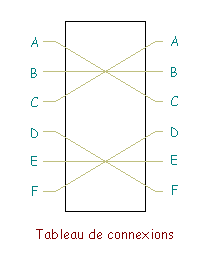
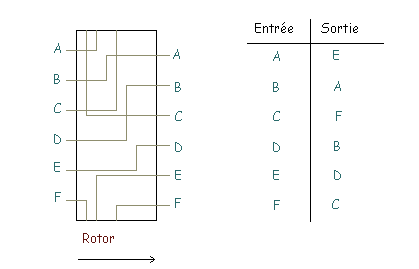
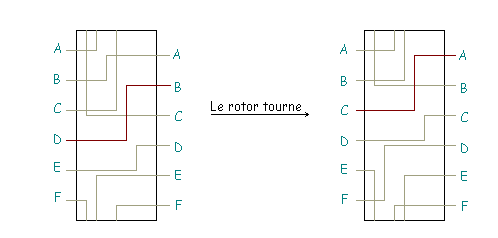
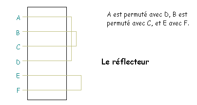
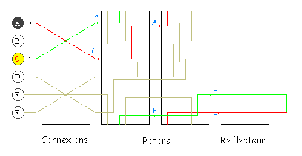

Principe de fonctionnement de la machine Enigma
Le codage Enigma effectué par la machine Enigma est à la fois simple et astucieux. Chaque lettre est remplacée par une autre, et la substitution opérée change d'une lettre à l'autre, un peu comme dans le chiffre de Vigenère. La machine Enigma est alimentée par une pile électrique. Quand on appuie sur une touche du clavier, un circuit électrique est fermé, et une lampe s'allume qui indique par quelle lettre on doit remplacer la lettre que l'on vient de frapper.
Concrètement, le circuit électrique est constitué de plusieurs éléments en chaîne :
- le tableau de connexions : il permet d'échanger des paires de l'alphabet, deux à deux, au moyen de fiches. Il y a 6 fiches qui permettent donc d'échanger 12 lettres. Un tableau de connections est donc une permutation très particulière où on a échangé au plus 6 paires. Par exemple, dans le tableau suivant (avec simplement 6 lettres), on a échangé A et C, D et F, tandis que B et E restent invariants. 
- les rotors : un rotor est également une permutation, mais cette fois quelconque. A chaque lettre en entrée correspond une autre lettre.  On peut composer les rotors, c'est-à-dire les mettre les uns à la suite des autres. La machine Enigma disposera, au gré de ses évolutions successives, de 3 à 6 rotors. Parmi ces rotors, seuls 3 sont utilisés pour le codage, et on a le choix de les placer dans l'ordre que l'on souhaite (ce qui constituera une partie de la clé). Surtout, les rotors sont cylindriques, et ils peuvent tourner autour de leur axe. Ainsi, à chaque fois qu'on a tapé une lettre, le premier rotor tourne d'un cran, et la permutation qu'il engendre est changée. Observons ce changement sur la figure suivante : le rotor transforme initialement D en B. Lorsqu'il tourne d'un cran, cette liaison électrique D--->B se retrouve remontée en C--->A et, lorsque la prochaine lettre sera tapée, le rotor transformera cette fois D en C.  Chaque rotor possède donc 26 positions. A chaque fois qu'une lettre est tapée, le premier rotor tourne d'un cran. Après 26 lettres, il est revenu à sa position initiale, et le second rotor tourne alors d'un cran. On recommence à tourner le premier rotor, et ainsi de suite... Quand le second rotor a retrouvé sa position initiale, c'est le troisième rotor qui tourne d'un cran.
- Le réflecteur : Au bout des 3 rotors se situe une dernière permutation qui permet de revenir en arrière. On permute une dernière fois les lettres 2 par 2, et on les fait retraverser les rotors, et le tableau de connexion. 
Résumons sur la machine simplifiée suivante (6 lettres, 2 rotors) comment est codée la lettre A :
- on traverse le tableau de connexions : on obtient C.
- on traverse les 2 rotors : on obtient successivement A et F.
- on traverse le réflecteur où on obtient E, puis on renvoie dans les rotors pour obtenir F, A et finalement C après le tableau de connexions.
Remarquons que si on avait tapé C, le courant aurait circulé dans l'autre sens et on aurait obtenu A.
Il y a trois éléments à connaitre pour pouvoir coder un message avec la machine Enigma.
- la position des 6 fiches du tableau de connexion : D'abord, il faut choisir 12 lettres parmi 26. C'est donc le nombre de combinaisons de 12 parmi 26, soit 26! /(12!14!). Maintenant, il faut choisir 6 paires de lettres parmi 12, soit 12!/6!, et comme la paire (A,D) donne la même connexion que la paire (B,A), il faut encore diviser par 26. On trouve finalement 100 391 791 500.
- l'ordre des rotors : il y a autant d'ordre que de façons d'ordonner 3 éléments : 3!=6.
- la position initiale des rotors : chaque rotor ayant 26 éléments, il y a 26*26*26=17576 choix.
On multiplie tout cela, et on obtient plus de $10^{16}$ possibilités, ce qui est énorme pour l'époque!
Il est important de remarquer que les permutations employées dans les rotors et les réflecteurs ne peuvent pas être considérées comme faisant partie du secret. En effet, toutes les machines utilisent les mêmes, et il suffit donc d'en avoir une à disposition. Les Anglais, par exemple, en ont récupéré une pendant la guerre dans un sous-marin coulé. Ceci est une illustration d'un principe général en cryptographie, principe dit de Kerckhoffs, qui veut que tout le secret doit résider dans la clé secrète de chiffrement et de déchiffrement, et pas dans une quelconque confidentialité de l'algorithme (ici de la machine) qui ne peut être raisonnablement garantie.
Nous avons déjà décrits les points forts de la machine Enigma. Pour l'essentiel, c'est le nombre de clés énorme, et la réversibilité : si, avec la même clé secrète initiale, on tape le message clair, on obtient le message codé, et avec le message codé, on obtient le message clair.
L'une des failles de la machine Enigma est que jamais la lettre A ne sera codée par un A. Cela élimine un certain nombre de cas à inspecter. Une des autres faiblesse dépend plutôt du protocole utilisé par les allemands : certains opérateurs (par exemple, ceux qui informaient de la météo) prenaient peu de précautions et commençaient toujours leurs messages par les mêmes mots (typiquement "Mon général..."). Les anglais connaissaient ainsi pour une partie du message à la fois le texte clair et le texte codé, ce qui aide à retrouver la clé. Et comme c'est la même clé qui sert pour toutes les machines Enigma de l'armée allemande pour un jour donné, une erreur de protocole dans un message peut compromettre la sécurité de tous les autres!